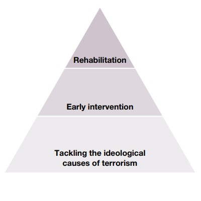

Prevent's Objectives
The Prevent Duty
The Aim
The aim of Prevent is to stop people from becoming terrorists or supporting terrorism. Prevent also extends to supporting the rehabilitation and disengagement of those already involved in terrorism.
Safeguarding
The Prevent duty requires specified authorities such as education, health, local authorities, police and criminal justice agencies (prisons and probation) to help prevent the risk of people becoming terrorists or supporting terrorism. It sits alongside long-established safeguarding duties on professionals to protect people from a range of other harms, such as substance abuse, involvement in gangs, and physical and sexual exploitation. The duty helps to ensure that people who are susceptible to radicalisation are supported as they would be under safeguarding processes.
Who does it
In fulfilling the Prevent duty in Section 26 of the Counter-Terrorism and Security Act 2015 (CTSA 2015), we expect all specified authorities to participate fully in work to prevent the risk of people becoming terrorists or supporting terrorism. We acknowledge that how they do this in practice will vary depending on factors such as the local context and risk, the most appropriate type of Prevent activity for them to be involved in, and the nature of their primary responsibilities and functions. As an example, for those who work directly with people who may be susceptible to radicalisation to terrorism, activity is most likely to be around identification and early intervention. Relevant factors may include relationships held with the person or the frequency of interaction.
The rules
When carrying out the Prevent duty, specified authorities should also ensure that they comply with other legal obligations, particularly those under data protection legislation and the Equality Act 2010 (for example, the Public Sector Equality Duty). Further education and higher education settings should be especially mindful of duties to protect freedom of speech and academic freedom.
Prevent Delivery Model
Tackling the ideological causes of terrorism
To tackle the ideological causes of terrorism, Prevent focuses on reducing the influence of radicalisers on susceptible audiences, as well as reducing the availability of, and access to, terrorist content. Our work to counter radicalisation and reduce permissive environments extends across academia, civil society, communities, government and industry. Prevent takes a partnership approach to disrupting radicalisers, including those who sow division and hatred, by working with local, regional and national partners, law enforcement agencies, and other government partners.
Early Intervention
Prevent intervenes early by identifying people who are susceptible to radicalisation and providing support to those suitable for intervention. Where the police assess a radicalisation risk following a Prevent referral, a Channel panel will meet to discuss the referral, assess the risk and decide whether the person should be accepted into Channel. Once accepted, the panel agree a tailored package of support to be offered to the person. The panel is chaired by the local authority and attended by multi-agency partners such as police, education professionals, health services, housing and social services. Channel is a voluntary process, and people must give their consent before they receive support. In cases where the person is under 18 years of age, consent is provided by a parent, guardian or the agency that has responsibility for their care. Where risks cannot be managed in Channel, they will be kept under review by the police.
Rehabilitation
Rehabilitation seeks to reduce the risk of people who have been involved in terrorist-related activity, including those who have been convicted of offences. The Desistance and Disengagement Programme provides specialist Home Office-approved intervention providers to give support in the form of theological, ideological and practical mentoring to reduce the offending risk
Further information
All of the information contained in this page was taken from the current prevent duty guidance for England and Wales, as a brief summary and overview. If you would like to know more please follow this link.